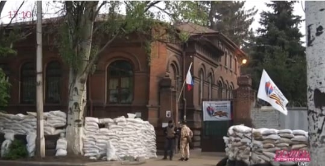

Российский военный эксперт привел аргументы в пользу того, что в Украине действует российский спецназ
Российский военный эксперт Павел Фельгенгауэр уверен, что беспорядками на востоке Украины руководят бойцы российского спецназа.Среди его доказательств — само наличие, тип и способ использования ПЗРК, которыми были сбиты украинские вертолеты; параллели с грузинскими событиями, а также другие факторы.
Предлагаем вашему вниманию сюжет российского телеканала Дождь по этому поводу:
https://www.youtube.com/watch?v=bevj5fVgJmg
Posted On: 2014-05-02T21:00:00

Content Date: 2014-05-02
Download Date: 2021-07-16
Document ID: L0C04FBC1